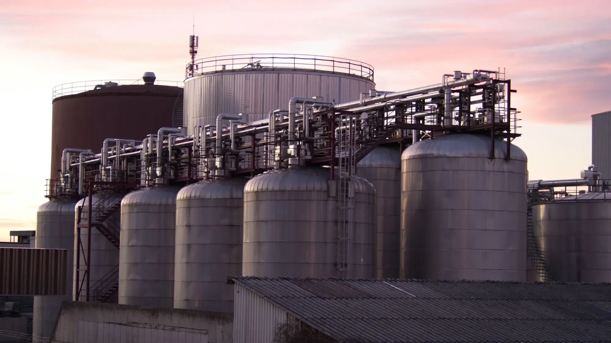

Zones watched. Heat-transfer performance understood.
In a chemical plant, one reading rarely tells the story. Video AI keeps configured zones in view, and sensor analysis reads flow, pressure and temperature together.
A single reading can look normal. The relationships rarely do.
Changing relationships between flow, pressure, temperature and equipment behaviour can reveal performance issues that a single reading misses. A heat exchanger holding its outlet temperature can still be working harder to do it.
Production zones add a second question: who is where, and when. The same site needs both a view of the area and an understanding of the equipment inside it.
Monitor activity in configured production zones.
Identify entry into restricted process areas, or activity near designated equipment during defined operating periods. Occupancy of an area can be tracked against the limits your site sets.
- Entry into a restricted process area
- Activity near designated equipment in a defined period
- Area occupancy against an agreed limit
Recognise declining heat-exchanger performance.
Compare cooling demand, temperature, flow and pressure-drop patterns at comparable conditions to assess possible developing fouling. The walkthrough on the industrial overview shows the idea with simulated data.
Relevant inputs
- Inlet and outlet temperature
- Flow
- Pressure drop
Representative assets
- Heat exchangers
- Process pumps
- Agitator motors
- Cooling fans
Control systems and monitoring should not share a blind spot.
Chemical plants run controllers and instruments that were not designed with outside access in mind. Adding analysis means being clear about what is connected, who can reach it, and where the boundaries are.
- 01
Asset visibility
Know which controllers, instruments and gateways exist before a new data feed is added.
- 02
Remote and vendor access
Control how equipment suppliers and contractors reach plant systems.
- 03
Segmentation
Keep monitoring data flows separate from the networks that control production.
Start with one zone. Or one exchanger that matters.
- 01
01
Understand
Choose the zone or the heat exchanger, and list which temperature, flow and pressure signals are already logged.
- 02
02
Develop
Build the baseline at comparable operating load and the area rules for the zone.
- 03
03
Validate
Test the analysis against agreed scenarios and past events your engineers remember.
- 04
04
Deploy
Route alerts and supporting observations to the people responsible, and refine thresholds with them.
A typical first project is one zone or one exchanger.
In a chemical plant the cleanest first project is a single heat exchanger, or a single zone with a clear rule about who may be there and when.
- 01
Scope
One heat exchanger with its pumps, or one production zone seen by an existing camera. A second asset or zone comes only after the first is judged.
- 02
Data to start with
Inlet and outlet temperature, flow and pressure drop at comparable operating load, and any record of past cleaning or fouling. For a zone, the area boundary and the schedule that applies.
- 03
Who is involved
A process or maintenance engineer who knows how the exchanger should behave, the zone owner, and an OT contact who can confirm how data can leave the control network.
- 04
A successful evaluation
Changes in heat-transfer performance show up at comparable load, your engineers can trace each flag to supporting readings, and zone alerts match the rules your site set.
Common questions about chemical plants
What can video AI do in a production zone?
It recognises configured events: entry into a restricted process area, activity near designated equipment in a defined period, or occupancy of an area against a limit. Each event goes to the contact you name with the context for review.
How can sensors show heat-exchanger fouling?
By comparing cooling demand, flow, temperature and pressure drop at comparable operating load. If cooling effort rises and pressure drop changes while the outlet looks steady, the pattern may be consistent with developing fouling, which is flagged for maintenance review.
Are the figures on the walkthrough real?
No. The heat-exchanger walkthrough uses simulated data to show how the analysis works. It is an illustrative application, not a customer deployment or a measured result.
Can it use data we already log?
Often. Existing historian or sensor feeds are the starting point, and we assess whether the measurements are enough for the asset in question. Where they are not, we say so before anything is built.
How do you approach OT security around this?
Monitoring is scoped with asset visibility, remote and vendor access and segmentation in view. We do not make compliance claims. The aim is that adding analysis does not widen who can reach plant systems.
Where do chemical plants usually begin?
With a single zone or a single asset that matters. Tell us the area or the exchanger, and we shape a demonstration around that application and agree how it will be judged.
Tell us which area or asset matters. We will shape a demonstration around it.
Illustrative applications, not customer deployment claims.